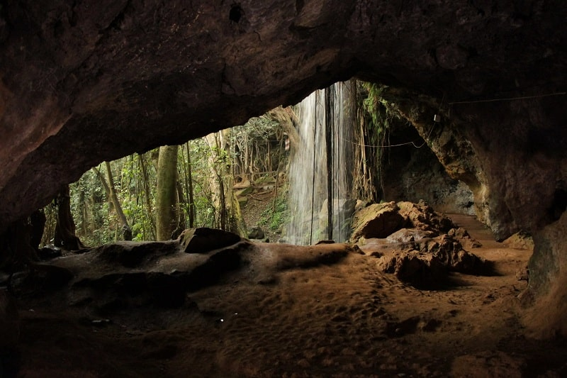
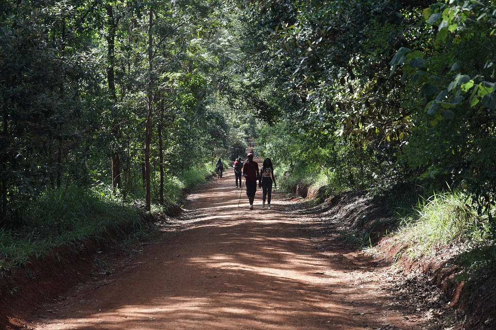

Nairobi’s Hidden Gems
Discover lesser-known treasures that offer peace, beauty, and adventure beyond the tourist path.

Paradise Lost
A serene getaway just outside the city with caves, waterfalls, and picnic grounds surrounded by nature.

Karura Forest
This urban forest offers biking trails, waterfalls, and peaceful walking paths right in Nairobi’s heart.
Graffiti Alleyways
Explore Nairobi’s creative side with colorful street murals, backstreet art, and bold urban expression.